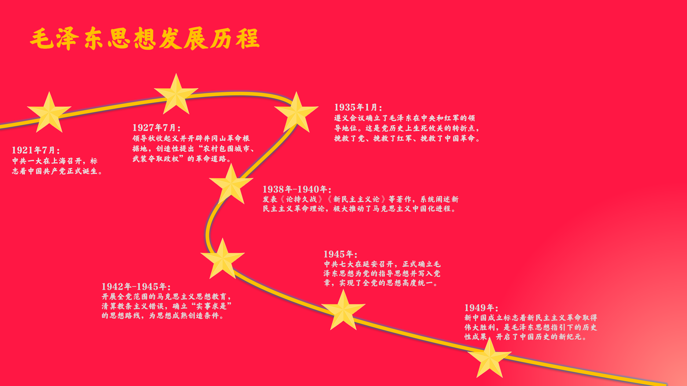
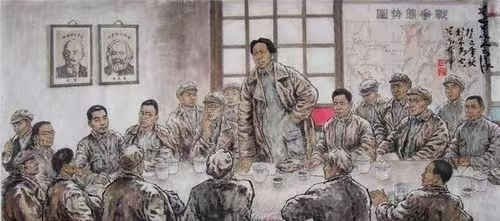
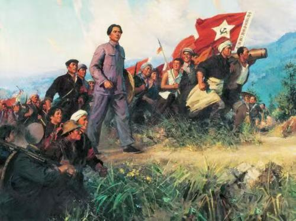
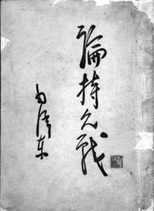
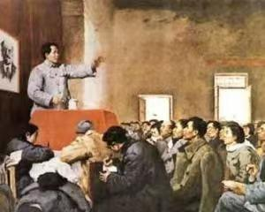
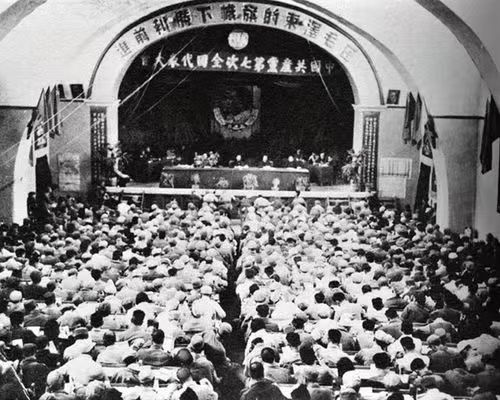
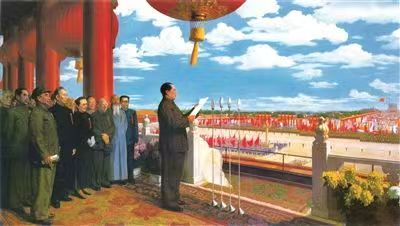

历史回溯（时间轴）
以时间轴形式回顾毛泽东思想发展的关键节点，理解这一伟大思想的形成历程与历史意义。

1921年7月 - 中国共产党成立
中国共产党第一次全国代表大会在上海召开，标志着中国共产党正式成立，为马克思主义在中国的传播和发展奠定了组织基础。

1927年 - 秋收起义与井冈山道路
毛泽东领导秋收起义，开辟井冈山革命根据地，创造性地提出了"农村包围城市、武装夺取政权"的革命道路。

1935年1月 - 遵义会议
遵义会议确立了毛泽东在中共中央和红军的领导地位，成为中国共产党历史上一个生死攸关的转折点。
1938-1940年 - 重要理论著作发表
毛泽东先后发表《论持久战》《新民主主义论》等重要著作，系统阐述了新民主主义革命理论，推动了马克思主义中国化。

1942-1945年 - 延安整风运动
全党范围的整风运动纠正了教条主义和经验主义错误，确立了实事求是的思想路线，为毛泽东思想的成熟创造了条件。

1945年4月-6月 - 党的七大
中共七大在延安召开，毛泽东思想被正式确立为党的指导思想并写入党章，实现了全党思想的高度统一。

1949年10月1日 - 中华人民共和国成立
新中国成立标志着新民主主义革命的伟大胜利，是毛泽东思想指导下的伟大实践成果。

毛泽东思想的核心内容
系统学习毛泽东思想的主要内容，理解其科学内涵与理论体系。
理论
新民主主义革命理论
关于中国革命的性质、对象、任务、动力和前途的科学理论。
法宝
三大法宝
统一战线、武装斗争、党的建设是中国革命取得胜利的三大法宝。
作风
三大作风
理论联系实际、密切联系群众、批评与自我批评。
毛泽东思想的当代价值
深入领会毛泽东思想活的灵魂，将其精神实质运用到新时代实践中。
实事求是
一切从实际出发，理论联系实际，是毛泽东思想活的灵魂。
群众路线
一切为了群众，一切依靠群众，从群众中来，到群众中去。
独立自主
坚持独立自主、自力更生，走自己的发展道路。
提示：更多内容可在"智能问答"中继续探索与学习。
← 返回主页